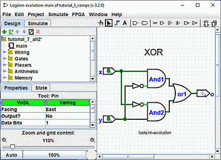

הקודם: שלב 2: הוספת חוטים
שלב 3: הוספת טקסט
הוספת טקסט למעגל אינה הכרחית כדי לגרום לו לעבוד; אבל אם אתה רוצה להראות את המעגל שלך למישהו (כמו מורה), אז כמה תוויות עוזרות לתקשר את המטרה של החלקים השונים במעגל שלך.
בחר בכלי "טקסט" ( ). אתה יכול ללחוץ על פין
קלט ולהתחיל
הקלדה כדי לתת לו תווית. (עדיף ללחוץ ישירות על סיכת הקלט מאשר ללחוץ היכן שאתה רוצה את הטקסט
ללכת, כי אז התווית תנוע עם הסיכה.) אתה יכול לעשות את אותו הדבר עבור פין הפלט. או שאתה יכול פשוט
לחץ על כל מקום ישן והתחל להקליד כדי לשים תווית בכל מקום אחר.
). אתה יכול ללחוץ על פין
קלט ולהתחיל
הקלדה כדי לתת לו תווית. (עדיף ללחוץ ישירות על סיכת הקלט מאשר ללחוץ היכן שאתה רוצה את הטקסט
ללכת, כי אז התווית תנוע עם הסיכה.) אתה יכול לעשות את אותו הדבר עבור פין הפלט. או שאתה יכול פשוט
לחץ על כל מקום ישן והתחל להקליד כדי לשים תווית בכל מקום אחר.

רכיבים רבים מקבלים תוויות, למשל אם תלחצו באחת הדלתות תוכלו גם להקצות תווית

אפשר לשנות תווית בכמה דרכים אחרות.
-
בלחיצה כפולה על הרכיב עם הכלי "עריכה" (
בלחיצה על תווית עם הכלי "טקסט" (
על ידי עריכת המאפיין "label" בתכונה שולחן.
